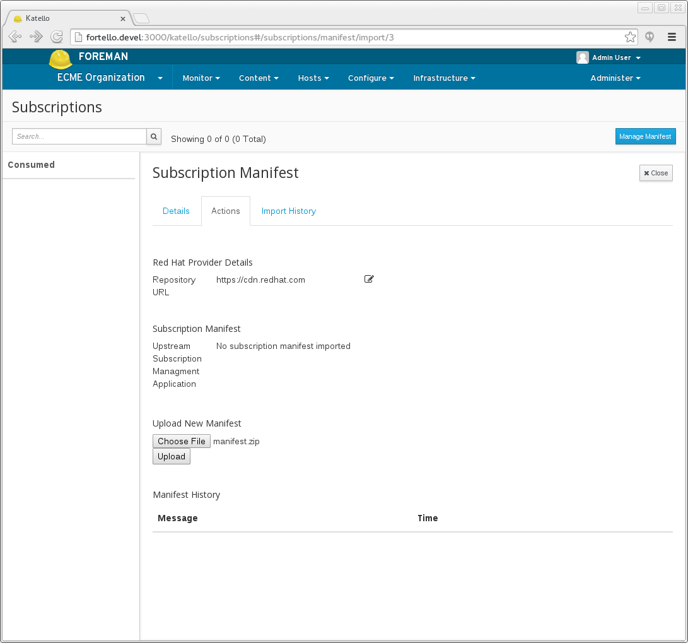
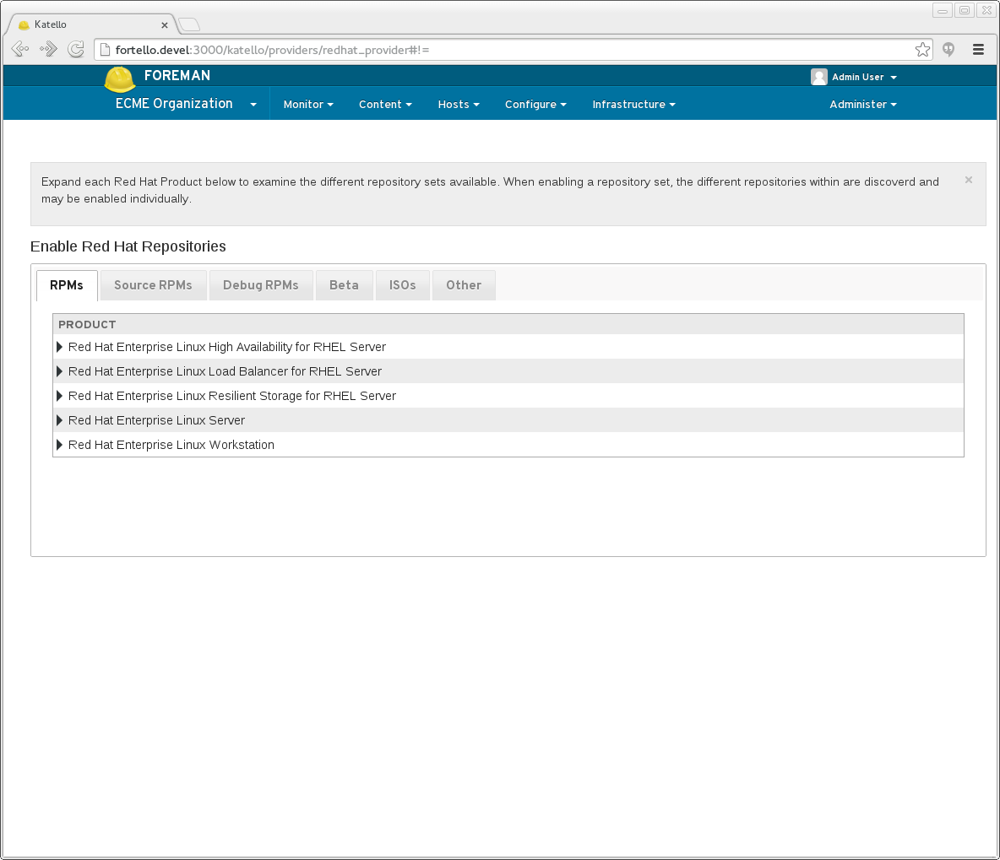
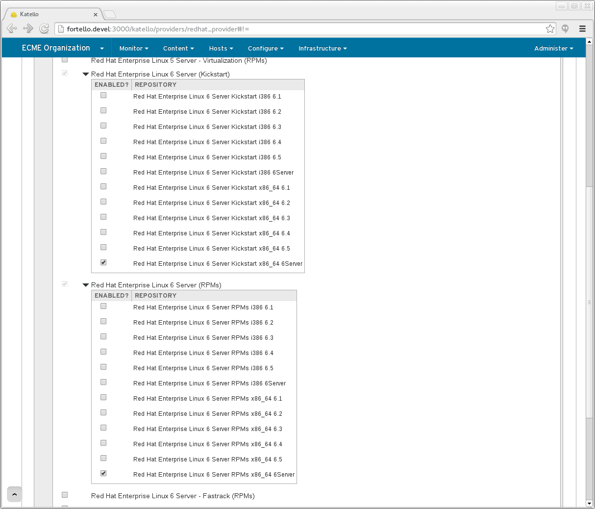
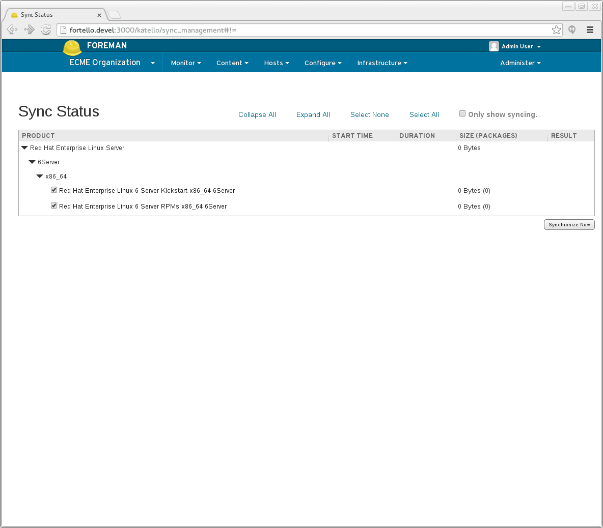
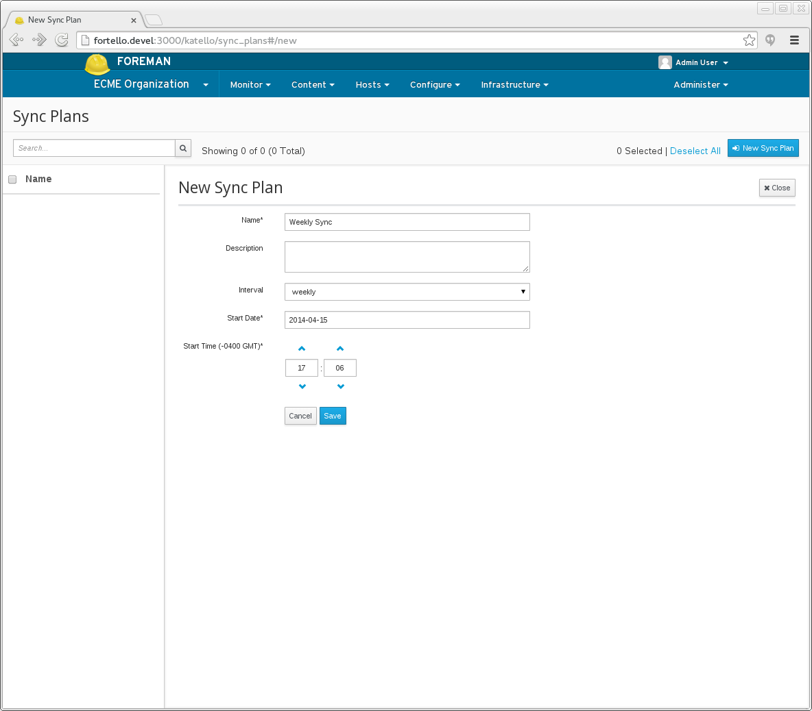
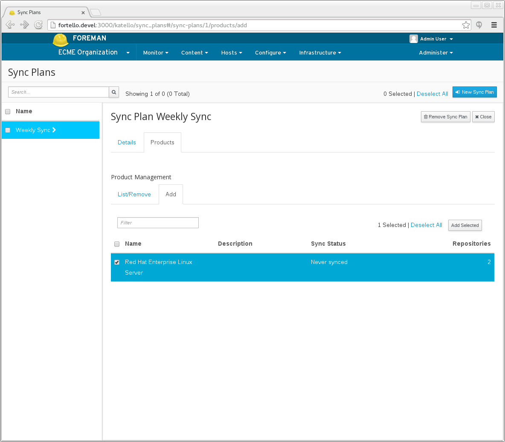

2.0: Red Hat Content
Red Hat Content
Katello can be used to manage content associated with Red Hat products based upon available subscriptions. This includes content such as RPMs, package groups, errata and distributions.
Definitions
- Subscription Manifest - An archive file containing certificates and data that represent the subscriptions that are available. A subscription manifest is created and downloaded from the Red Hat Customer Portal.
- Repository - Collection of content (either rpm or puppet).
- Product - Collection of repositories (content hosts attach to a product).
- Library - The initial lifecycle environment where repositories are created. Content that is synced or uploaded lands in the library.
General Workflow
The following is a high-level summary of the workflow:
- Create a subscription manifest using the Red Hat Customer Portal
- Import the subscription manifest
- Enable Red Hat repositories
- Synchronize repositories
- Schedule repository synchronization
- Attach a content host to a product for Red Hat content
Create a Subscription Manifest Using the Red Hat Customer Portal
If you are a Red Hat customer, you should have access to the Red Hat Customer Portal to create and download a subscription manifest. Once created, the manifest can be imported in to a Katello Organization.
To access the Red Hat Customer Portal, click here
For details on how to create a subscription manifest, click here
Import the Subscription Manifest
Importing a subscription manifest will allow for Red Hat content associated with purchased subscriptions to be enabled and synchronized to Katello.
To import a manifest,
- navigate to: Content > Red Hat Subscriptions
- click Choose File
- navigate to the file containing the manifest (e.g. manifest.zip)
- click Open
- click Upload

Enable Red Hat Repositories
Once a subscription manifest is imported, access is available to potentially hundreds of Red Hat Repositories (e.g. Red Hat Enterprise Linux Server, Red Hat Enterprise Virtualization…etc). This process allows you to select only those that you are interested in for your enterprise.
To enable Red Hat repositories,
- navigate to: Content > Red Hat Repositories
- select the content type: RPMs, Source RPMs, Debug RPMs, Beta, ISOs or Other
- select one or more Red Hat products (e.g. Red Hat Enterprise Linux Server)
- select one or more Repsitory Sets (e.g. Red Hat Enterprise Linux 6 Server (RPMs))
- select one or more Repositories (e.g. Red Hat Enterprise Linux 6 Server RPMs x86_64 6Server)
Note:
- When enabling a RHEL repository, Red Hat recommends selecting the Server repo (e.g. 6Server, 5Server) versus a specific release (e.g. 6.2). When a specific release is necessary, the preferred way is to create a Content View with filters that narrow the content to the desired version (e.g. 6.2)
- If you plan to provision content hosts, be sure to enable both the RPM and Kickstart repositories.
 
Synchronize Repositories
Synchronizing a repository will retrieve all associated content and mirror the content in the Katello Library lifecycle environment.
To sync multiple repositories as well as track their progress,
- navigate to: Content > Sync Status
- expand the desired products
- select the repositories to sync
- click Synchronize Now

Schedule Repository Synchronization
Creating a Sync Plan
Sync plans provide the ability to schedule repository synchronization on a daily, weekly or a monthly basis. Sync plans can be applied individually or to a set of repositories.
To create a Sync Plan,
- navigate to: Content > Sync Plans
- click New Sync Plan on the upper right
Note the following options:
- Start Date and Start Time: specify the day of the week/month and time of the day to run the re-occuring syncs. For example, a sync plan that starts on Sunday 2014-04-06 at 2:30 will occur every Sunday at 2:30 every week if it has a weekly interval. If on a monthly interval it would sync every month on the 6th day at 2:30.

Assigning a Sync Plan to a Red Hat Product
To assign a sync plan to a product,
- navigate to Content > Sync Plans
- select your Sync Plan
- click Products
- click Add
- select the products that you want to add
- click Add Selected on the upper right

Attach a Content Host to a Product for Red Hat Content
To read about registering a content host and subscribing it to a product, click TODO.